| Platform
Changes |
Eclipse on Vista |
The win32 version of Eclipse now runs beautifully on Windows Vista. SWT now exploits
native features of the Vista platform, such as native double-buffering to make
painting in double-buffered canvases twice as fast.
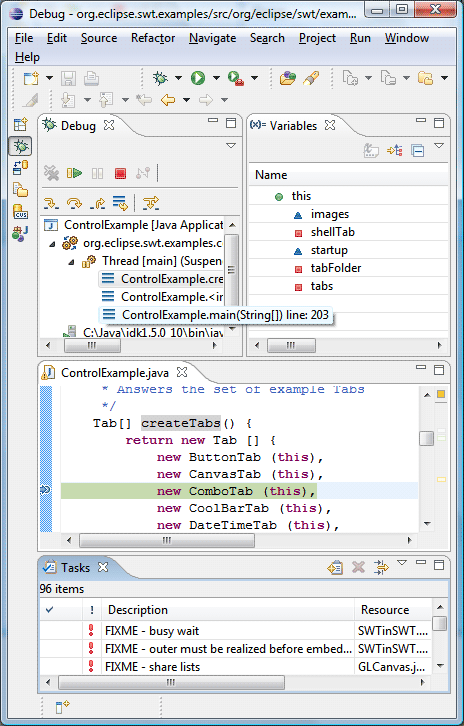 |
New Eclipse WPF port |
Eclipse is now available on Windows Presentation
Foundation (WPF), a new window system that comes pre-installed on Microsoft Windows Vista.
This port is in early access form for 3.3. While this port is stable enough for
exploration and development, it has not yet matured to the level of stability
and performance you have come to expect from the Eclipse platform. Stay
tuned for more improvements on this platform in future releases.
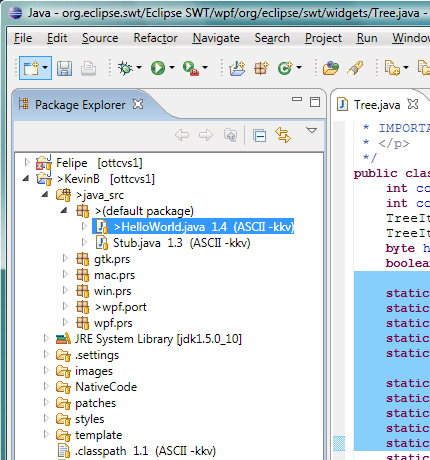 |
Quick access |
To quickly access UI elements such as views,
commands, preference pages, and others, use the new Quick Access dialog,
available under Window > Navigation and bound to Ctrl+3 by
default. Start typing in the filter field to see matches. For example,
to open the console view, type Ctrl+3 followed by "con". One
of the first matches will be to open the console view. You can use the
arrow keys to select a different match for a given filter string. Press
Enter to select the highlighted entry. This will execute the command, or
open the view, perspective, or wizard etc.
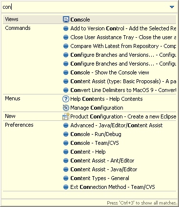
Your previous choices will be remembered and shown the next time the
dialog opens. If you enter the same filter string again, the entry you
picked last time will be selected automatically.
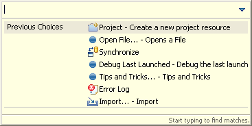
Using the initials of the words you are trying to find, you can narrow
down your choices using very few letters.
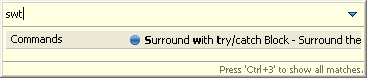 |
Undo support for resource operations |
Undo and redo are now available for most resource
changes. When you manipulate projects, folders, or files, you now have
the ability to undo and redo the changes you have made. This includes resource
creation, deletion, move, copy, and rename. Use the Edit menu
from the Navigator view to undo the operation. Note that operations from
other views (such as the Java Package Explorer or Project Explorer) may not support undo.
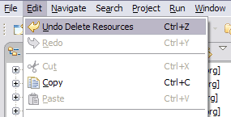 |
Undo support for task and bookmark operations |
Undo is now available for many task and bookmark
operations. When you create, update, add, or delete a task or bookmark,
you now have the ability to undo that change. Use the Edit
menu from the Navigator, Package Explorer, Tasks, or Bookmarks views to
undo the operation.
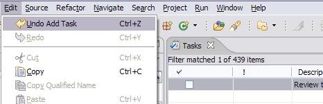 |
A new look |
Eclipse has a new default presentation. Some of the key features
of this presentation are:
- New Minimize/Maximize behavior. The new 'Minimize' behavior is to move the
view stack to the nearest trim area, showing a 'Restore' button along with the
icons for the views in the stack. When in the trim, clicking on a view icon will show
the view as a fast view. Minimized trays can be drag and dropped to new locations
along the workbench trim. Maximization of any stack triggers minimization of all others.
Maximizing an editor now maximizes the entire editor area, allowing you to view
multiple editors side-by-side while maximized.
- New workbench tab treatments. Workbench tabs have a new color
scheme based on your system title background color, and unselected tabs
now also have rounded corners to match the appearance of
selected tabs. When tabs become crowded, they now maintain their icon and
no longer show an ellipsis in order to maximize the amount of useful information.
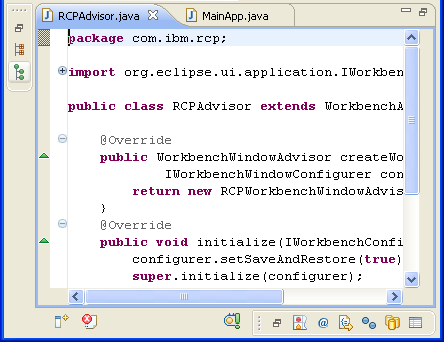
You can reinstate the old presentation via the General > Appearance preference
page. |
Improved workspace switching |
When you switch workspaces you can now transfer some of your current
settings with you. The most recently used workspaces now appear on the file menu
under the Switch Workspace item for quick access.
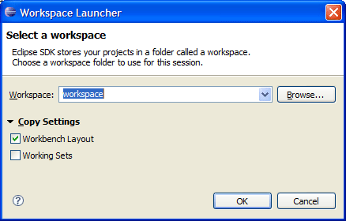 |
| Improved resource selection dialog |
The resource selection dialog (Navigate > Open Resource)
now allows you to filter based on working set, and supports camel-case search.
For example, searching with the string "TIMF" will match a file called "ThisIsMyFile".
The dialog also now shows the history of recently opened items, and allows
multi-selection to open several resources at once.
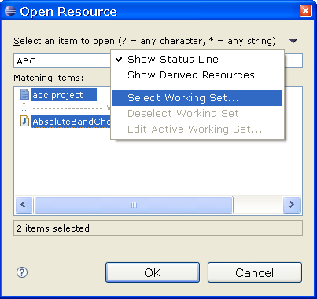 |
All plug-ins are now signed |
All plug-ins in Eclipse project builds are now signed using a cryptographic
signature provided by the Eclipse Foundation. This allows you to authenticate that
the content you receive from the download server matches the content on
eclipse.org. Eclipse update manager will also authenticate the signatures on these
plug-ins when they are provided from an update site. You can see information
about plug-in signatures under Help > About Eclipse > Plug-in Details |
| Working set usability improvements |
You can now add and remove selected elements
to and from working sets in your workspace. This functionality is found in the
Edit menu as well as in the toolbar. You can also create a new working set
directly from the Add to working set toolbar dropdown.
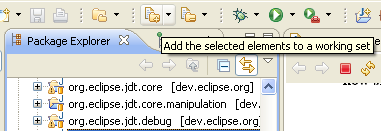 |
| Hiding the window toolbar
|
You can now hide the window toolbar by clicking Window > Hide Toolbar
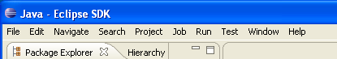 |
Working sets for the Project Explorer |
The Project Explorer can now group and filter elements by working set. You can
display working sets as top-level groupings or aggregated into a flat list. The window
working sets can also be selected and grouped or aggregated based on a preference.
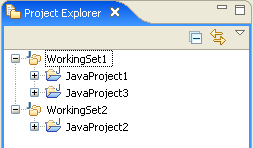
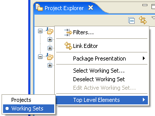 |
Patch wizard improvements |
The Apply Patch wizard now allows you to preview
the patch changes against the contents of the local workspace. When applying
CVS patches, you can also now manually apply unmatched patch segments to
the local file. No more digging through *.rej files!
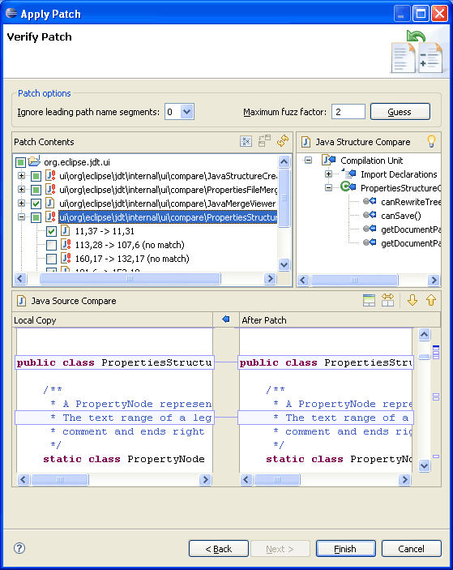 |
Compare editor improvements |
The compare editor has a number of significant improvements:
- The contents of compare editors are now kept in sync with other editors
currently open on the same file.
- Comparisons that used to take a long time now take a matter of seconds,
thanks to a new text differencing algorithm.
- Compare editors are now initialized in the background so that the UI remains
responsive while the files are being fetched and compared.
- Many of your favorite editor commands are now available in compare editors,
including find/replace, show whitespace characters, show line numbers, and the Show In
sub-menu.
- Compare editors now highlight individual changes within a block of changes.
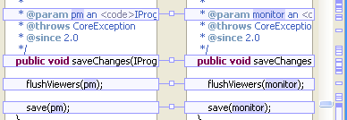 |
Compare Structure in Outline view |
You can now view the structure pane of a compare editor
in the Outline view. To enable this, go to the General > Compare/Patch preference
page and check Show structure compare in Outline view when possible.
Selecting structure elements in the Outline view will scroll the content
pane in the Compare editor to reveal the change in the selected element.
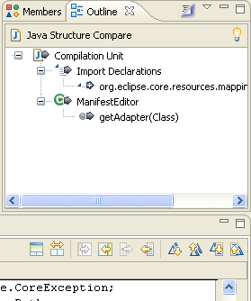 |
Long resource paths on Windows |
Where the underlying file system allows it, you can now create resources with
paths longer than 260 characters on Windows. This requires a Java 1.5 VM or greater.
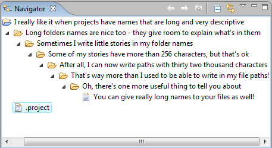 |
Open files with other editors |
You can now open files with editors that are not registered for the specific
file extension. Right-click on your file and select Open with > Other.
You will be presented with a list of editors to choose from.
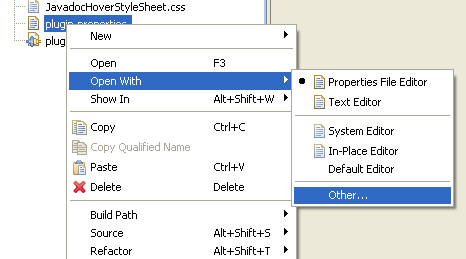 |
Forms enhancements |
UI forms have many visual and functional enhancements, including rendering
and layout of the heading area, with drop-down menu, drag and drop, and shared-header support. Form validation
now supports multiple messages, and shows which field the error occurred in.

|
Platform level proxy and SSH2 settings |
A new General > Network Connections preference
page has been added for managing proxy settings.
In addition, the JSch
SSH2 client used by the Eclipse CVS client has been
pushed down to the Eclipse Platform so that it can be used by other
clients as well. Use the new General > Network Connections > SSH2 preference
page to configure it.
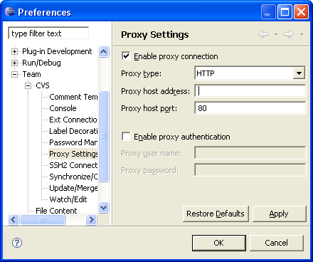 |
Keys preference page improvements |
The Keys preference page displays your key bindings
and can optionally display all available commands that can be bound to
keys. Customized key bindings are marked by the "delta"
icon  in
the User column. in
the User column.
You can now:
- Update a selected binding immediately by modifying the Binding or
When fields
- Create a binding from a command by modifying the Binding field
- Create a command from a binding using the Copy Command button
- Remove all changes from the system with Restore Defaults
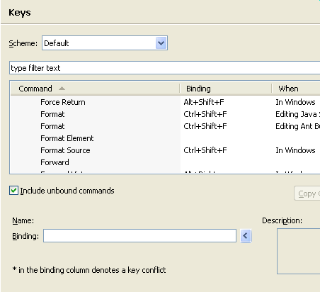 |
Editor area drag and drop |
Dragging external files (i.e., from the Windows file explorer) on to the
editor area of a workbench window has the same effect as Open
File. Also, you can now drag an editor between workbench windows
associated with the same workspace. |
Properties view make over |
The Properties view has adapted to the new
look and feel of UI forms. Visual enhancements include new title bar
layout, colors and gradient, and new tab design and colors.
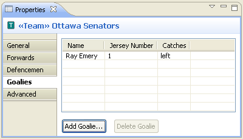 |
Console launcher for Windows
|
There is now a second launcher "eclipsec.exe" on Windows that behaves as
expected for a console application. This allows piping the output from Eclipse,
sending the Ctrl+Break signal to the VM to generate a stack dump, and better
behavior in general for the standard -console, -consoleLog and -debug options. |
Improved detection of Mozilla plug-ins |
Users of Mozilla-based browsers can now augment
the default set of Mozilla plug-in paths that are searched by defining
environment variable MOZ_PLUGIN_PATH. For example:
export MOZ_PLUGIN_PATH=/usr/lib/browser-plugins |
Easier help navigation |
The help window now has a Home button in the navigation
toolbar, which brings you back to the initial home page. You can also find your
way home by following the bread crumbs at the top of each document. These links
allow for easier navigation and provide more information about the context of the
document being viewed.
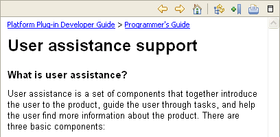 |
Help search term highlighting |
If you open a help document as a result of a
search, a new toggle button will appear in the toolbar allowing you to toggle
the search term highlighting on and off, making the document easier to read.
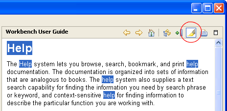 |
Categorized help search |
You can now categorize help search hits by book
in the help window via the new toolbar toggle button. Similarly, you can
also toggle the search descriptions.
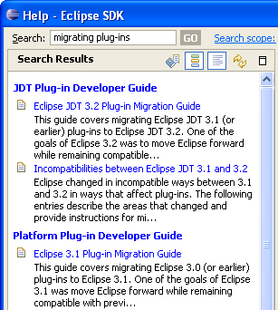 |
Print multiple help topics |
You can now print multiple topics in the help
window with a single action. The new print drop-down button above the table
of contents allows you to print a complete topic sub-tree at any level,
and will automatically generate a table of contents in the printed document.
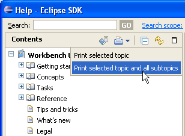 |
Cheat sheet improvements |
You can open a cheat sheet from the Web by specifying its URL in the open cheat sheet dialog.
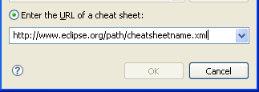
Sub steps in a cheat sheet are now clearly separated using horizontal
lines. Sub steps can now be previewed. The background colors in the cheat
sheet view have been adjusted to make the active step stand out more. |
| Editor Changes
These changes apply to all textual editors in the SDK.
|
Spell checking in text editors |
Spell checking is now available in text editors and an American and a British English dictionary are part of the SDK:
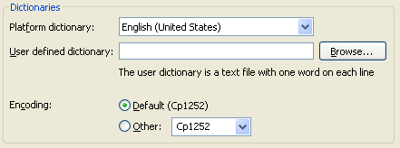
Spell checking is now enabled per default. If you're already a spelling whiz,
you can disable this feature with the new Disable Spell Checking quick assist.
|
Show invisible whitespace characters |
It is now possible to see the invisible whitespace characters in textual editors:
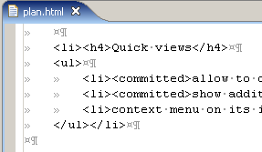
This feature can either be controlled via General > Editors > Text
Editors >
Show whitespace characters preference, or via the [] tool bar button when the Editor Presentation action set
is enabled. |
Text drag and drop in text editors |
You can now drag and drop text to and from text editors:
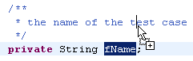
You can control this via General > Editors > Text
Editors > Enable drag and drop of text preference. |
Scroll by pages using Ctrl + mouse wheel |
The mouse wheel scrolls the content of a textual
editor by pages while the Ctrl key is pressed. |
Select by word or line using the mouse |
Double-click and drag now grows or shrinks the selection by a word at a time.
Triple click will select a whole line, and those with nimble fingers can triple-click and
drag to grow or shrink the selection by a line at a time.
|
Smart Home/End |
Pressing Home and End keys now ignores whitespace at the start and end of a line. Pressing the key a second time goes to the real start and end. Pressing the key again toggles between the two start/end positions.
Home/End inside a linked area jumps to the beginning or end of the linked area, e.g. when filling in a template.
This feature can be controlled via General > Editors > Text Editors > Smart caret positioning at line start and end preference.
|
More team annotation options |
Team annotations in text editor ruler can now be configured in a number
of ways: you can select from three different coloring schemes and choose
whether author and revision information should be displayed as text in addition
to the coloring. The following screen shot shows the revision numbers, background
colored by author, and additional information in the hover and it also emphasizes
the changes belonging to the same revision. This is achieved by clicking on a revision in the live annotate ruler. A second click removes the stickiness again.

Below we see the author names, with background colored by date. These options
are configurable via the ruler context menu (Ctrl+F10):
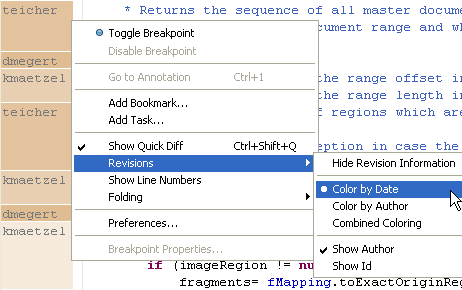
|
Recenter command |
A new command has been added that allows recentering
the line that contains the caret. By default, this command is only bound
to a key binding (Ctrl+L) when using the Emacs scheme. To bind it
in the Default scheme, simply assign a key sequence to the Recenter
command which can be found in the Text Editing category. |
Joining lines in text editors |
You can now use the new command Ctrl+Alt+J in a text editor to join lines. |
Convert tabs to spaces |
Text editors now allow you to convert tabs to spaces when typing.
This feature can be enabled via General
> Editors > Text Editors > Insert spaces for tabs preference. |
More flexible templates |
The syntax for templates has evolved to allow
typed and parameterized template variables. This allows the same variable
type to be used multiple times in the same template. As an example, consider
the following template for generating a doubly nested for loop:
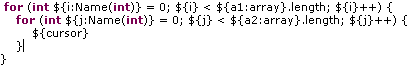 |
| Team/CVS
Changes |
Import CVS projects directly into working sets |
You can now assign CVS projects to a working
set during import. This is available from both the CVS Repository
View (via Check Out As) and through the CVS Import Wizard.
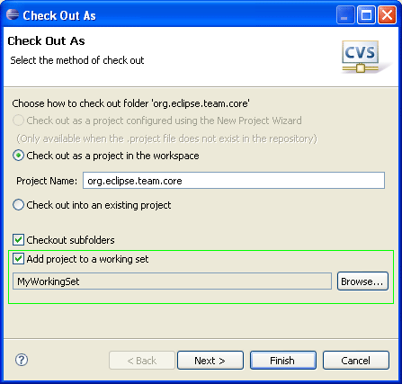 |
Export working sets as part of team project set
|
The export wizard can now persist active working sets as part of a Team Project set.
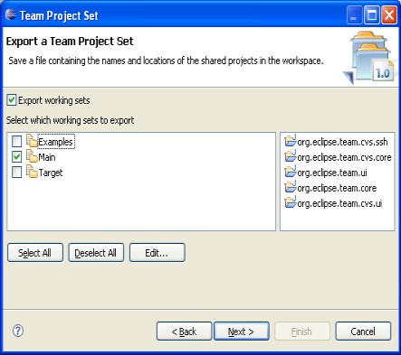 |
History view search
|
The History view has a new search field that allows you to filter the history
based on text in the author, comment, revision, and tags.
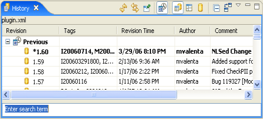 |
History view now has view history |
The History view now allows you to navigate
back to previously viewed elements.
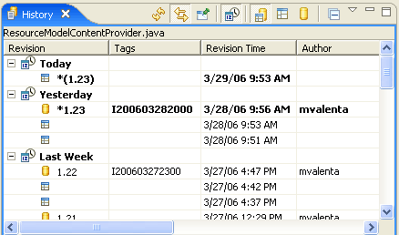 |
Spell check in Commit dialog |
The Commit dialog now uses the Eclipse spell
checker to highlight spelling errors in commit messages.
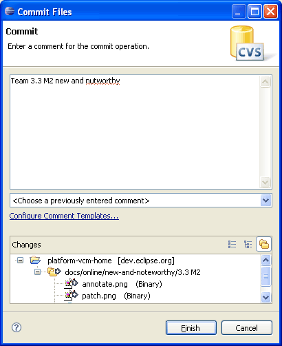 |
Flat presentation in model-based synchronizations |
A flat presentation has been added to model-based
synchronizations. For CVS, model-based synchronizations are the default.

|
| Debug
Changes |
| Launch selection vs. launch last |
Running and debugging applications has been simplified
to run or debug the selected file or active editor. Use the Launch
the selected resource or active editor preference to enable
this behavior on the Run/Debug
> Launching preference page. When the selected resource
(or active editor) is not executable, you can opt to launch the associated
project or launch the previously launched application.
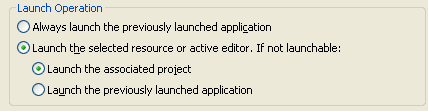
Pressing the Run or Debug toolbar
button will launch the selected resource (as will the Run
or Debug action in the top level Run menu). When a
launch configuration does not exist for a file and there is only one
way to launch it, the file will simply be launched in the mode you selected.
When there is more than one way to launch a file you will be prompted
to select how to run or debug the application. For example, when running
a JUnit test you can run as a Java application or JUnit test. A launch
configuration will be created and an entry will be added to the launch
history for the application.
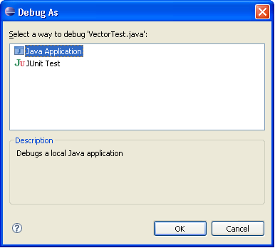
When the same file is launched again, the most recent configuration
in the launch history associated with that file is re-launched.
|
| Run/Debug settings |
A new properties page has been added to manage launch
configurations associated with a resource. For example, selecting the
Run/Debug Settings property page for a project will
display all launch configurations associated with that project. Configurations
can be created, deleted, and edited from this page.
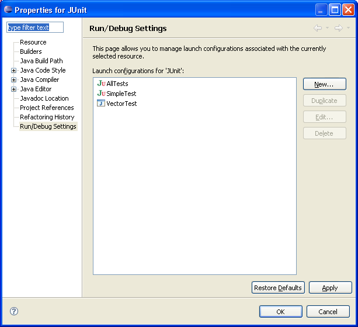 |
| Automatically showing console |
Toggle buttons have been added to the console toolbar
controlling when the console is automatically displayed. The buttons
provide quick access to the workspace preferences to show the console
when output is written to standard out or standard error (also available
from the Run/Debug
> Console preference page).

|